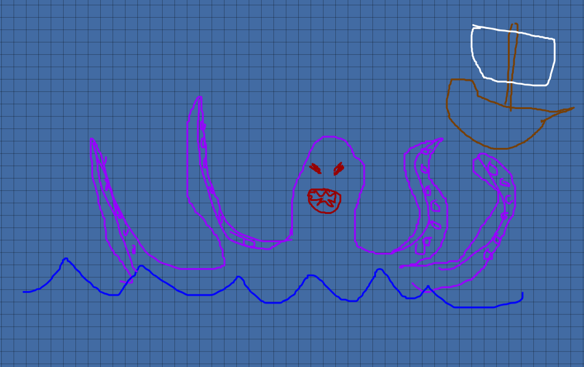

The Creature Revealed
Behold... The Kraken

If you have seen this creature, please report your sighting immediately.
There is more proof - for the first time ever, actual video footage was obtained!
View Kraken Sighting Video